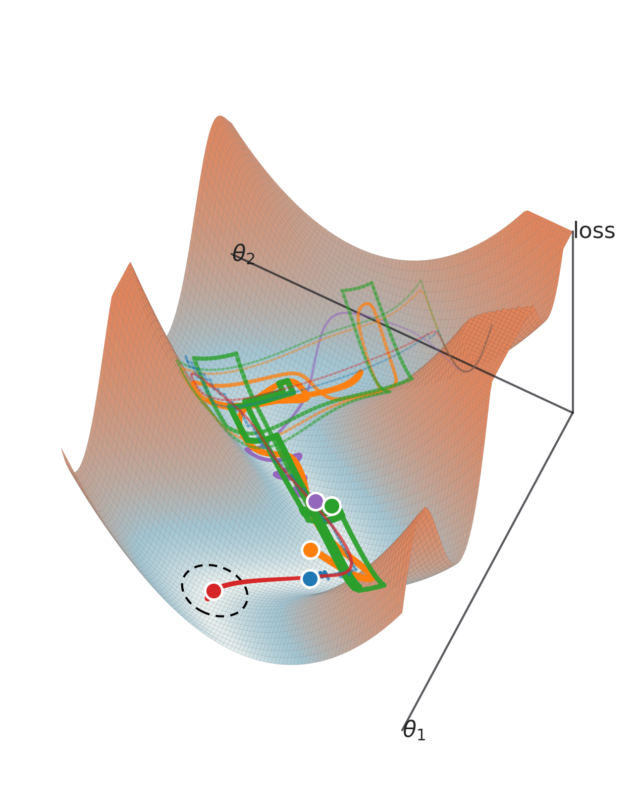

tmp — apr26#
Motivation: scratch notebook
device_idx = 1
device = f'cuda:{device_idx}'
print(f"device: {device} ——— host: {os.uname().nodename}")
device: cuda:1 ——— host: mach
from gra.figures.optimizer_kinematics import plot_curved_valley_3d_endpoint
%%time
plot_curved_valley_3d_endpoint(dpi=400)
plt.show()

CPU times: user 5.34 s, sys: 200 ms, total: 5.54 s
Wall time: 5.62 s
from mcfe.main.conv_dictionary import conv_arithmetic
df = conv_arithmetic(
deconv=True,
input_size=25,
output_size=40,
stride=1,
padding=0,
output_padding=0,
)
print(df)
mode computed parameter value 0 deconv False input_size 25 1 deconv False output_size 40 2 deconv True kernel_size 16 3 deconv False stride 1 4 deconv False padding 0 5 deconv False output_padding 0
from mcfe.main.load_model import load_model
wandb_run_id = 'pal-lab/MCFE/ifd6z5ce'
tr, meta = load_model(target_path=wandb_run_id, verbose=True)
Path 'pal-lab/MCFE/ifd6z5ce' matches WandB format. Fetching config...
wandb: ERROR Failed to detect the name of this notebook. You can set it manually with the WANDB_NOTEBOOK_NAME environment variable to enable code saving.
wandb: [wandb.Api()] Loaded credentials for https://api.wandb.ai from /home/hadi/.netrc.
/home/hadi/Projects/MCFE/checkpoints/nb_vH16-wht_kms-(512,1,1)_fixed-dec-var_s-2/b(1000)-ep(3000)-lr(0.005)_beta(1) /2026_03_28,16:56
# params: 263.4 K
Successfully loaded model from /home/hadi/Projects/MCFE/checkpoints/nb_vH16-wht_kms-(512,1,1)_fixed-dec-var_s-2/b(1000)-ep(3000)-lr(0.005)_beta(1) /2026_03_28,16:56
Checkpoint File: NegativeBinomialVAE+Trainer-3000_(2026_03_29,00:05).pt
tr.model.dec.weight.shape
torch.Size([512, 256])
Cadena conv arithmetic#
conv encoder test#
from mcfe.main.conv_encoder import build_conv_enc
enc = build_conv_enc(
input_size=[1, 28, 28],
output_channels=512,
output_pixels=7,
use_se=True,
)
print(enc)
Sequential( (0): Conv2d(1, 32, kernel_size=(3, 3), stride=(1, 1), padding=(1, 1)) (1): SiLU(inplace=True) (2): ResBlock( (conv1): Conv2d(32, 64, kernel_size=(3, 3), stride=(2, 2), padding=(1, 1)) (act): SiLU(inplace=True) (conv2): Conv2d(64, 64, kernel_size=(3, 3), stride=(1, 1), padding=(1, 1)) (se): SELayer( (fc): Sequential( (0): Linear(in_features=64, out_features=4, bias=True) (1): ReLU(inplace=True) (2): Linear(in_features=4, out_features=64, bias=True) (3): Sigmoid() ) ) (skip): FactorizedReduce( (act): SiLU() (convs): ModuleList( (0-3): 4 x Conv2d(32, 16, kernel_size=(1, 1), stride=(2, 2)) ) ) ) (3): ResBlock( (conv1): Conv2d(64, 128, kernel_size=(3, 3), stride=(2, 2), padding=(1, 1)) (act): SiLU(inplace=True) (conv2): Conv2d(128, 128, kernel_size=(3, 3), stride=(1, 1), padding=(1, 1)) (se): SELayer( (fc): Sequential( (0): Linear(in_features=128, out_features=8, bias=True) (1): ReLU(inplace=True) (2): Linear(in_features=8, out_features=128, bias=True) (3): Sigmoid() ) ) (skip): FactorizedReduce( (act): SiLU() (convs): ModuleList( (0-3): 4 x Conv2d(64, 32, kernel_size=(1, 1), stride=(2, 2)) ) ) ) (4): Conv2d(128, 512, kernel_size=(1, 1), stride=(1, 1)) )
x = torch.randn((123, 1, 28, 28))
z = enc(x)
z.shape
torch.Size([123, 512, 7, 7])
from mcfe.main.conv_dictionary import conv_arithmetic
df = conv_arithmetic(
deconv=True,
input_size=8,
output_size=28,
stride=3,
padding=0,
output_padding=0,
)
print(df)
mode computed parameter value 0 deconv False input_size 8 1 deconv False output_size 28 2 deconv True kernel_size 7 3 deconv False stride 3 4 deconv False padding 0 5 deconv False output_padding 0
df = conv_arithmetic(
deconv=True,
input_size=6,
output_size=28,
stride=4,
padding=0,
output_padding=0,
)
print(df)
mode computed parameter value 0 deconv False input_size 6 1 deconv False output_size 28 2 deconv True kernel_size 8 3 deconv False stride 4 4 deconv False padding 0 5 deconv False output_padding 0
df = conv_arithmetic(
deconv=True,
input_size=8,
output_size=28,
stride=2,
padding=0,
output_padding=0,
)
print(df)
mode computed parameter value 0 deconv False input_size 8 1 deconv False output_size 28 2 deconv True kernel_size 14 3 deconv False stride 2 4 deconv False padding 0 5 deconv False output_padding 0
14* 14 * 2
392
WandB delete runs#
import wandb
api = wandb.Api()
project = "pal-lab/MCFE"
tags_to_delete = {
# "nb_sweep_icml_rebuttal", "nb_sweep_rebuttal",
# "sweep_icml_mar28", "sweep_nb_icml2026_rebuttal",
"sweep_icml_mar29",
}
runs = api.runs(project, filters={
"$or": [{"tags": tag} for tag in tags_to_delete]
})
print(f"Found {len(runs)} runs to delete.")
wandb: ERROR Failed to detect the name of this notebook. You can set it manually with the WANDB_NOTEBOOK_NAME environment variable to enable code saving.
wandb: [wandb.Api()] Loaded credentials for https://api.wandb.ai from /home/hadi/.netrc.
Found 4 runs to delete.
for run in runs:
print(f"Deleting {run.name} (tags: {run.tags})")
run.delete()
print("Done.")
Deleting nb_vH16-wht_kms-(512,1,1)_fixed-dec-var_s-1/b(1000)-ep(3000)-lr(0.001)_beta(1)_sweep_icml_mar29/2026_03_29,15:08 (tags: ['nb', 'sweep_icml_mar29'])
Deleting nb_vH16-wht_kms-(512,1,1)_fixed-dec-var_s-1/b(1000)-ep(3000)-lr(0.001)_beta(1)_sweep_icml_mar29/2026_03_29,15:09 (tags: ['nb', 'sweep_icml_mar29'])
Deleting nb-cubic_mse_vH16-wht_kms-(512,1,1)_fixed-dec-var/b(1000)-ep(3000)-lr(0.001)_beta(1)_temp(1→1e-06)_sweep_icml_mar29 /2026_03_29,15:09 (tags: ['nb-cubic', 'sweep_icml_mar29'])
Deleting nb-cubic_mse_vH16-wht_kms-(512,1,1)_fixed-dec-var_s-2/b(1000)-ep(3000)-lr(0.001)_beta(1)_temp(1→1e-06)_sweep_icml_m ar29/2026_03_29,15:09 (tags: ['nb-cubic', 'sweep_icml_mar29'])
Done.